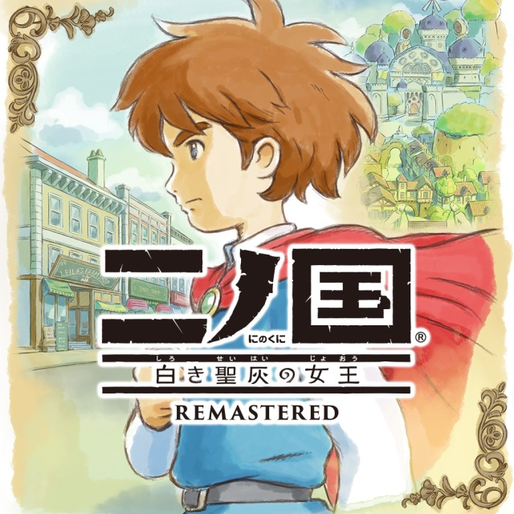

Ni no Kuni: Wrath of the White Witch Remastered
Information
Game n°5
Two new things in this lesson.
First I picked a game with audio. If you click on you'll here the sound taken directly from the game.
I have an issue where not all files are in chronological order, so I'm missing a few.
There's no way to know which file matches which line without listening to them, and there are thousands audio files so ...
Maybe, one day I'll do the whole game anyway, and I'll complete this lesson, but I've played and dropped this game 3 times now.
The second thing, is Kansai dialect.
That means that depending on some region people talk in different way than what we've learned. That's true in real life and
video games.
I might be confusing at first because you may not know if it's Kansai dialect or not, but that's why we're here.
Vocabulary
- 急ぐ - いそぐ 【急ぐ】★★★★★
to hurry, to rush, to hasten, to make something happen sooner - 待つ - まつ 【待つ】★★★★★
to wait - 王国 - おうこく 【王国】★★★
kingdom, monarchy - や - 【や】 ★★
plain copula - どうしよう - 【どうしよう】
what to do - 逃げる - にげる 【逃げる】★★★★★
to escape, to run away - ほな - 【ほな】★★
then, well then, if so - 国 - くに 【国】★★★★★
country, state - せや - 【せや】
that is right, that is so, oh, right - ら - ら 【等】★★★★
pluralizing suffix - 違う - ちがう 【違う】★★★★★
to differ (from), to vary - もうひとつ - もうひとつ 【もう一つ】
another, one more - ああ - 【ああ】★★★★
ah; oh - ごめん - ごめん 【御免】★★★★
your pardon, declining (something), dismissal, permission
ごめんなさい【御免なさい】
I beg your pardon, excuse me - おば - おば 【伯母】★★★★
aunt - さん - 【さん】
Mr., Mrs., Miss, Ms., -san - ぶん - ぶん【分】 ★
part, segment, share, ration - うん - 【うん】★★★★★
yes, yeah, uh huh - 見せる - みせる 【見せる】★★★★★
to show, to display - 言う - いう 【言う】★★★★★
to say, to utter, to declare - い - 【い】★★★★
strengthens a question, assertion, etc. - ホント - 【ホント】
truth, reality, actuality, fact - じゃ - 【じゃ】★★★★
then, well, so, well then - 手 - て 【手】★★★★★
hand, arm - 今 - いま 【今】★★★★★
now, the present time, just now, soon, immediately, (one) more - さっき - 【さっき】★★★★
some time ago, just now - 配達 - はいたつ 【配達】★★★
delivery, distribution - 出かける - でかける 【出かける】
to go out (e.g. on an excursion or outing), to leave, to depart, to start, to set out - だから - 【だから】★★★★★
so, therefore - へん - へん【辺】 ★★★★★
area, vicinity, region - そのへん - そのへん 【その辺】
around there, near there - あぁ - 【あ】 ★★★★
Ah!, Oh!, expression of surprise, recollection, etc. - 母 - はは 【母】★★★★★
mother
おかあさん【お母さん】
mother - よろしく - よろしく 【宜しく】★★★★★
well, properly, suitably - おーい - 【おーい】
hey!, oi!, ahoy! - こっち - こっち 【此方】
this way (direction close to the speaker or towards the speaker), this direction
Grammar
- かい - 【かい】
marks yes-no question - もう - 【もう】★★★
now, soon, shortly, before long, presently - すぐ - すぐ 【直ぐ】★★★★★
immediately, at once, right away, directly - とは - 【とは】
indicates word or phrase being defined - なら - 【なら】
if, in case, if it is the case that, if it is true that - そこ - そこ【其処】 ★★★★★
there (place relatively near listener) - おく - おく【置く】 ★★★★★
to do something in advance - たい - 【たい】★★★★★
want to ... do something, would like to ... - って - 【って】★★★★★
casual quoting particle - けど - 【けど】★★★★
but, however, although - どこ - どこ 【何処】★★★★★
where, what place - ところ - ところ 【所】
place, spot, scene, site - まだ - まだ 【未だ】★★★★★
as yet, hitherto, only, still, not yet (with negative verb) - 思う - おもう 【思う】★★★★★
to think, to consider, to believe
Lesson
.jpg)
.jpg)
.jpg)
.jpg)
.jpg)
.jpg)
.jpg)
.jpg)
.jpg)
.jpg)
.jpg)
.jpg)
.jpg)
.jpg)
The て-form of a verb plus the helping verb おく describes an action performed in preparation for something.
The action is done (or will be done) with the future in mind.
.jpg)
.jpg)
.jpg)
.jpg)
.jpg)
.jpg)
.jpg)
But we're not shying away from those no more.
When used after a verb, it means the verb is about to happen, or just happenned.
.jpg)
.jpg)
.jpg)
.jpg)
.jpg)
.jpg)
.jpg)